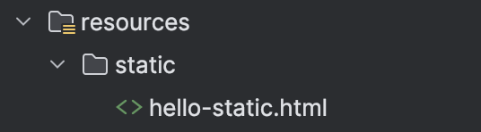
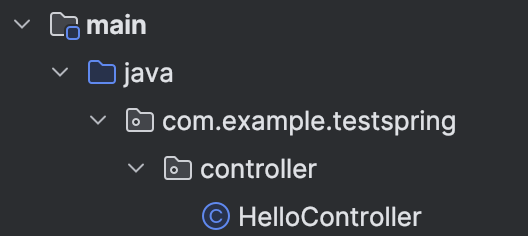
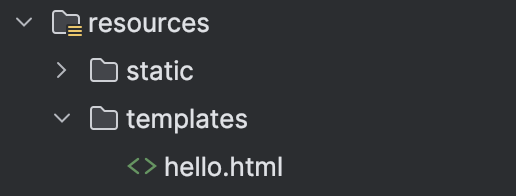

#1 정적 페이지 방식
정적 페이지 방식은 서버 측에서 html 파일을 따로 가공하지 않고 그대로 페이지에 렌더링하는 방식이다. 따라서 매우간단하게 사용할 수 있으나, 페이지 변경이 불가능하다.

src/resources/static 경로에 해당 정적 페이지 파일을 위치해 두면 Spring 프레임워크가 자동으로 정적 페이지를 탐색해 화면에 출력해 준다.
SpringBootApplication
@SpringBootApplication 이노테이션은 스프링 프레임 워크의 진입점을 의미하며, 스프링 프로젝트를 처음 생성하면 다음과 같은 코드가 작성된다.
package com.example.testspring;
import org.springframework.boot.SpringApplication;
import org.springframework.boot.autoconfigure.SpringBootApplication;
@SpringBootApplication
public class TestSpringApplication {
public static void main(String[] args) {
SpringApplication.run(TestSpringApplication.class, args);
}
}#2 MVC & Template Engine
MVC란 Model-View-Controller의 약자로, 세 가지 요소가 서로 독립적으로 기능하여 영향을 미치지 않게 하는 최근 서버 사이드 프로그래밍에서 주류로 사용되는 소프트웨어 공학 기법이다.
Controller는 외부의 요청을 입력받아 처리하는 역할을 담당하며, 처리한 결과를 Model에 저장한 뒤 해당 모델은 View로 전달되어 사용자에게 보여진다.
이 때 View의 역할을 담당하는 엔진은 여러가지가 있지만, 이번 예제 에서는 Thymeleaf Template Engine을 사용한다.
#2.1 MVC와 정적 페이지의 차이점
MVC 방식은 서버단에서 php, spring, ruby 등과 같은 백엔드 라이브러리를 통해 가공된 html 파일을 화면에 던져주지만, 정적 페이지 방식은 가공되지 않은 날것의 페이지를 사용자에게 보여준다.
#2.2 Controller
Controller는 화면과 요청 로직을 연결해 주는 브릿지 역할을 수행하며, Controller를 작성할 경우 코드 위에 @Controller 이노테이션을 명시해 주어야 한다.
@Controller 해당 코드가 컨트롤러 역할을 수행하는 코드임을 명시해주는 이노테이션 이다.
@GetMapping("경로") 해당 경로로 들어온 GET 요청을 처리해 주는 이노테이션이다.
return-value : 반환 값으로 문자열을 반환하며, 해당 반환값은 출력할 실제 페이지 이름이다.
아래 코드는 웹 어플리케이션 으로 부터 /hello 주소로 Get 요청이 들어오면 model 파라미터로 key-value 형태로 매핑한 뒤, hello.html 파일을 찾아 매핑한 key-value를 전달하는 코드이다.

package com.example.testspring.controller;
import org.springframework.stereotype.Controller;
import org.springframework.ui.Model;
import org.springframework.web.bind.annotation.GetMapping;
import org.springframework.web.bind.annotation.RequestParam;
import org.springframework.web.bind.annotation.ResponseBody;
@Controller
public class HelloController {
// 웹 어플리케이션에서, /hello 쿼리가 들어오면 해당 메서드를 호출해 준다.
@GetMapping("hello")
public String hello(Model model) {
// model 내부로 들어간 값을 key-value 형태로 hello.html 파일로 전달한다.
model.addAttribute("data","nov");
return "hello";
}
}
컨트롤러에서 리턴값을 반환하면 viewResolver가 resources/templates 내부에 있는 반환값과 일치하는 이름의 hello.html 페이지를 렌더링 해준다.
viewResolver는 컨트롤러의 반환값과 일치하는 페이지를 찾아서 렌더링 하는 역할을 수행하며, 매핑 방식은 다음과 같다.
resources:templates/ + {viewName} + .html

* Thymeleaf Template Engine 방식으로 작성된 html 파일
<!DOCTYPE HTML>
<html xmlns:th="http://www.thymeleaf.org">
<head>
<title>Hello</title>
<meta http-equiv="Content-Type" content="text/html; charset=UTF8"/>
</head>
<body>
<p th:text="'welcome ' + ${data}"></p>
</body>
</html>
스프링 서버 파일을 실행한 뒤 http://localhost:8080/hello 경로로 get 요청을 보내면, 다음과 같은 동적 페이지가 렌더링 된다.